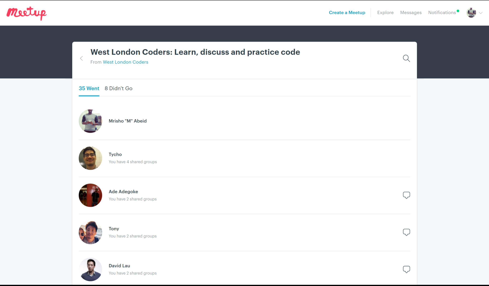

1.0 MEETUP WITH WEST LONDON CODERS
This was during the first few weeks of the semester when we were asked to plan and attend at least 3 events that were related to the course that we are doing.
Whilst I was looking at a number of events online, I came across a meetup for the West London Coders based in Westfield, Shepherd's Bush in the YOOX NET-A-PORTER offices. I was able to gain excellent contacts of diffrerent people who I was able to share knowledge and expertise with. Effectively, these people helped me develop my industry awareness since most of them are currently in employment in fields that I am interested in, they also helped me develop my profession online presence by connecting with me on Linkedin and suggesting a number of different professionals and employers who I could connect with in regards to enquire about job opportunities in my chosen fields. Eventually, this increased my connections from 42 since 2014 to 115 in 1 month. All of these activities helped my develop my soft-skills specifically in communication and public speaking, mainly because I was required to introduce myself to the whole group and give a 5 minutes presentation on any programming language that I know or would like to learn, together with the reasons why I chose that specific programming language.
On the other hand, they also helped me increase my practical skills and knowledge especially because many of them know more about programming than I do. It was an opportunity for me to learn new programming languages (such as: Ruby, Rails, React.js) and different ways to program such as Agile programming which is very different from the conventional waterfall method that I am used to, I also learnt about the applications of these programming languages and what they could be used for in useful and time saving ways such as using Ruby to pull information from social media websites with the help of APIs, in order to create what is known as an early-warning tool that effectively identifies any problems and their locations much quicker so that these problems could be solved immediately.
And finally, after a full day of learning and making new contacts they introduced us to another organization known as Codebar which provides similar opportunities for learning programming, however, they do more in terms of giving exercises to encourage people to learn more as well as competitions among students with prizes for the best participants. Read more here.
The following are the co-orgaizers of the event who I met, taught me programming and introduced me to the rest of the group of attendees of the event as well as some of their contacts on Linkedin.